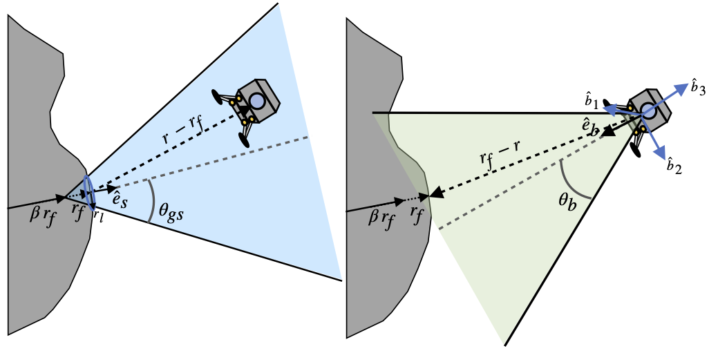
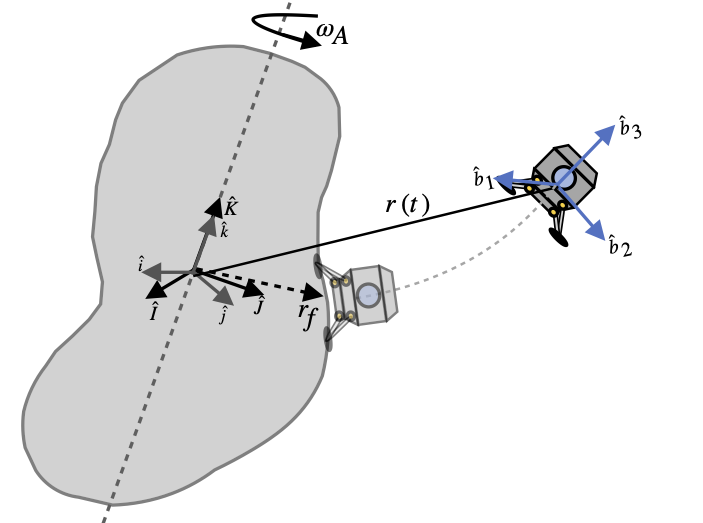
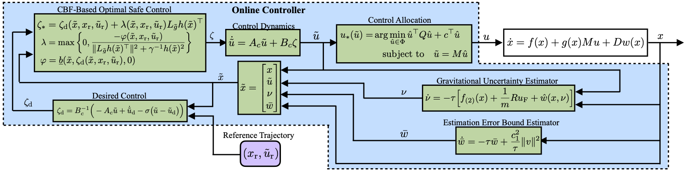
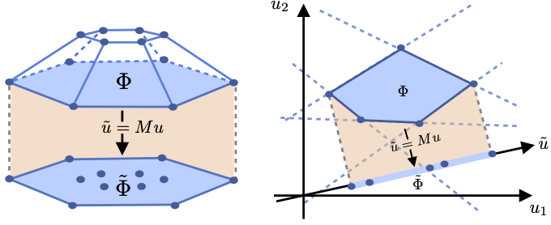

Coupled position-attitude control
Pose control is formulated on R3 × SO(3), with constraints on position, attitude, velocity, and angular velocity.
Department of Mechanical and Aerospace Engineering · University of Kentucky
Under review at Frontiers in Robotics and AI
Main contributions
The paper combines four elements needed for position-and-attitude landing control on a small celestial body.
Pose control is formulated on R3 × SO(3), with constraints on position, attitude, velocity, and angular velocity.
An extended high-gain observer estimates the gravitational disturbance together with a time-varying upper bound on its estimation error.
Polytope projection maps individual actuator bounds into equivalent constraints on the net control forces and torques.
A composite control barrier function yields a single-constraint quadratic program with a closed-form solution for safe optimal control.
Landing on small celestial bodies is challenging because the spacecraft must satisfy safety and actuator constraints despite gravitational forces that are difficult to model accurately. This article presents an optimal control for safe landing with gravitational uncertainty and strict actuator limits.
The approach addresses spacecraft pose control with attitude represented on SO(3), where there are constraints on position, attitude, velocity, angular velocity, and the actuators. An extended high-gain observer estimates the gravitational uncertainty and provides a dynamic upper bound on the estimation error. A composite control barrier function is then used to compute optimal forces and torques that satisfy the state and actuator constraints while tracking a landing trajectory. Finally, an optimal allocation maps the forces and torques to feasible actuator commands. The method is demonstrated in simulation using two vehicle configurations with severe gravitational uncertainty.
01 · Problem
The spacecraft must approach the touchdown site inside a safe corridor, maintain sensor visibility, respect speed limits, and never request more than its actuators can deliver.


02 · Method
The proposed controller combines disturbance estimation, nominal trajectory tracking, safety enforcement, and control allocation.

Map the high-dimensional actuator set into an exact polytope of admissible forces and torques.
Estimate gravitational uncertainty online and update a bound on the residual estimation error.
Use a composite barrier constraint to find the closest safe force-and-torque command.
Distribute the safe command across thrusters and reaction wheels without violating individual limits.
Input-constraint transformation
Polytope projection converts individual actuator bounds into equivalent inequalities on the net force and torque. The safety filter can therefore enforce the true hardware limits directly, before the allocation layer recovers actuator commands.

03 · Results
The numerical study evaluates the controller across two vehicle configurations and two small-body models under severe gravitational uncertainty.
04 · Paper & resources
The manuscript contains the complete derivations, observer analysis, safety guarantees, and numerical results. The implementation repository will be made public alongside the paper.
@article{arenas2026safe,
title = {Safe Position and Attitude Control for
Landing on Small Celestial Bodies with
Gravitational Uncertainty},
author = {Arenas-Uribe, Felipe and Seigler,
T. Michael and Hoagg, Jesse B.},
journal = {Frontiers in Robotics and AI},
note = {Under review},
year = {2026}
}The citation will be updated when final publication details are available.